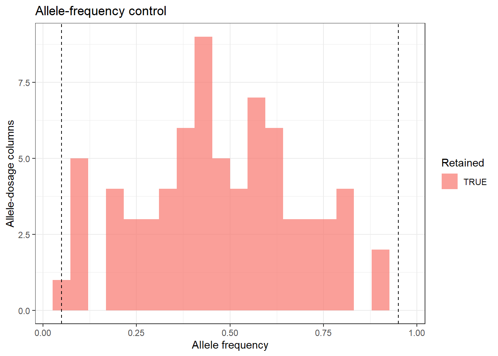
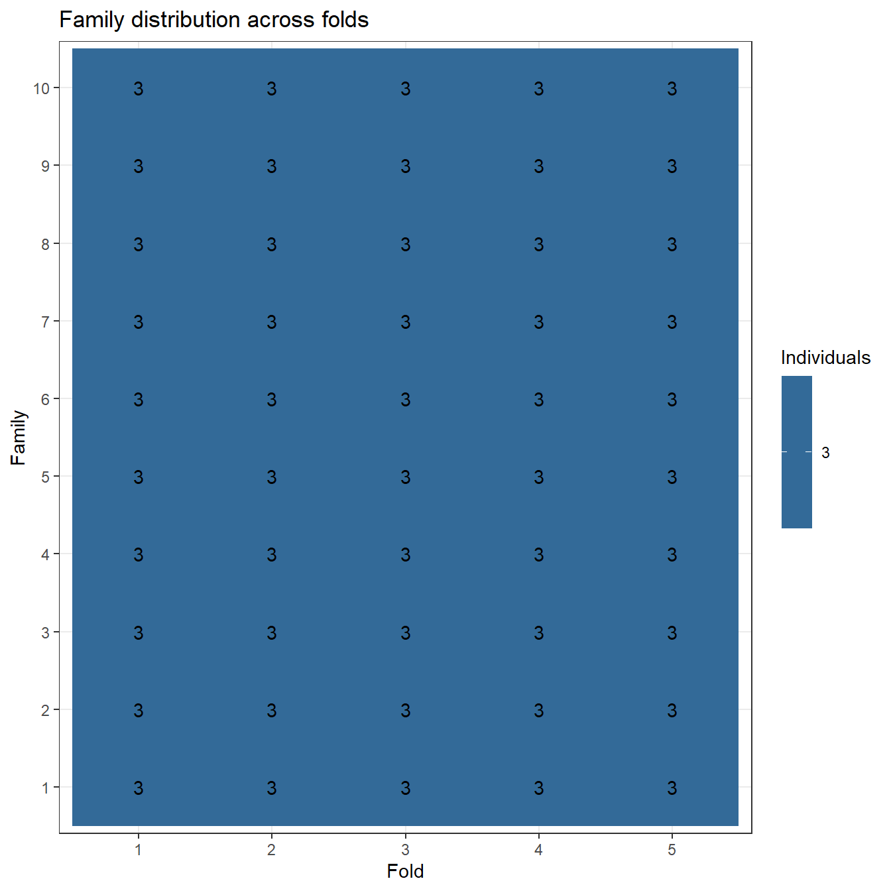
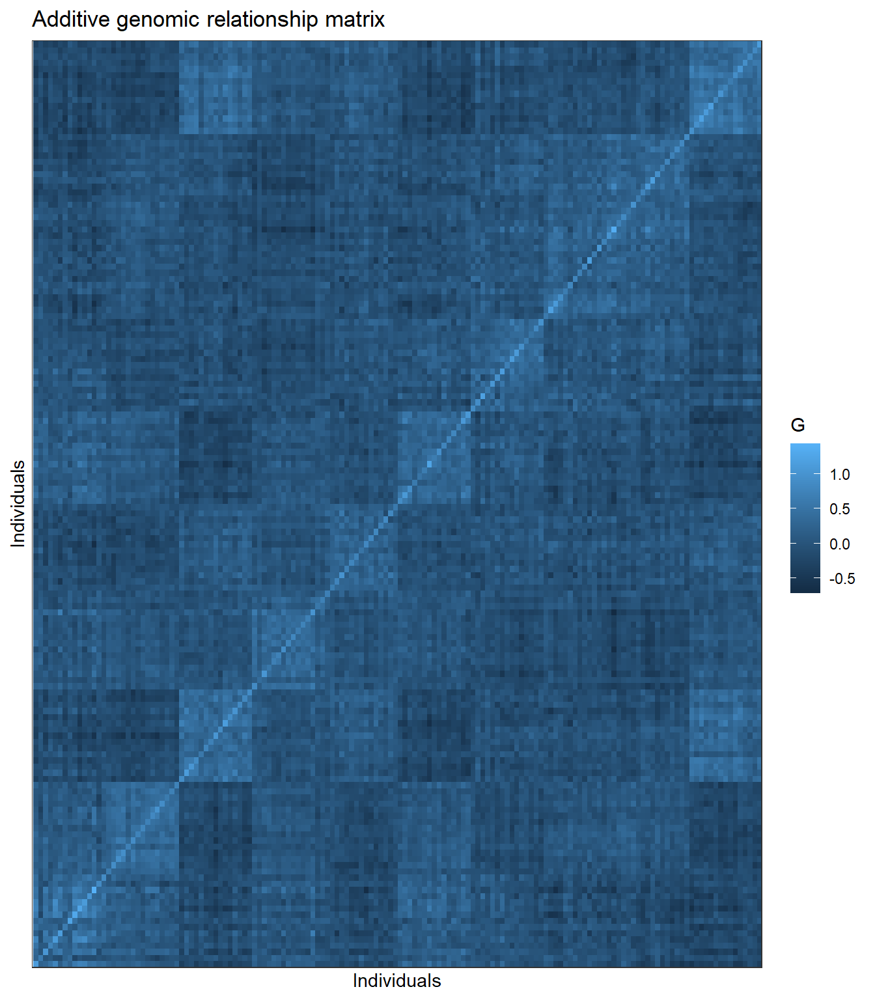

Last updated: 2026-08-05
Checks: 7 0
Knit directory:
Bayesian-ridge-regression-papaya/
This reproducible R Markdown analysis was created with workflowr (version 1.7.2). The Checks tab describes the reproducibility checks that were applied when the results were created. The Past versions tab lists the development history.
Great! Since the R Markdown file has been committed to the Git repository, you know the exact version of the code that produced these results.
Great job! The global environment was empty. Objects defined in the global environment can affect the analysis in your R Markdown file in unknown ways. For reproduciblity it’s best to always run the code in an empty environment.
The command set.seed(20260717) was run prior to running
the code in the R Markdown file. Setting a seed ensures that any results
that rely on randomness, e.g. subsampling or permutations, are
reproducible.
Great job! Recording the operating system, R version, and package versions is critical for reproducibility.
Nice! There were no cached chunks for this analysis, so you can be confident that you successfully produced the results during this run.
Great job! Using relative paths to the files within your workflowr project makes it easier to run your code on other machines.
Great! You are using Git for version control. Tracking code development and connecting the code version to the results is critical for reproducibility.
The results in this page were generated with repository version 775643a. See the Past versions tab to see a history of the changes made to the R Markdown and HTML files.
Note that you need to be careful to ensure that all relevant files for
the analysis have been committed to Git prior to generating the results
(you can use wflow_publish or
wflow_git_commit). workflowr only checks the R Markdown
file, but you know if there are other scripts or data files that it
depends on. Below is the status of the Git repository when the results
were generated:
Ignored files:
Ignored: .Rproj.user/
Ignored: .github/
Ignored: code/
Ignored: data/Bayesiana goiaba Eileen SReport.pdf
Ignored: module03_pilot_seven_methods.zip
Ignored: output/bglr_runs/
Ignored: output/figures/
Ignored: output/matrices/
Ignored: output/models/
Ignored: output/preprocessing/
Ignored: output/tables/
Ignored: papaya_documentation_contract_v1.zip
Ignored: papaya_module01_phenotype_audit_v1.zip
Ignored: papaya_module02_unique_matrices_v1.zip
Ignored: renv/library/
Ignored: renv/staging/
Ignored: tests/
Note that any generated files, e.g. HTML, png, CSS, etc., are not included in this status report because it is ok for generated content to have uncommitted changes.
These are the previous versions of the repository in which changes were
made to the R Markdown (analysis/02_matrices_en.Rmd) and
HTML (docs/02_matrices_en.html) files. If you’ve configured
a remote Git repository (see ?wflow_git_remote), click on
the hyperlinks in the table below to view the files as they were in that
past version.
| File | Version | Author | Date | Message |
|---|---|---|---|---|
| Rmd | 775643a | WevertonGomesCosta | 2026-08-05 | feat: add seven-method BGLR pilot |
| html | e5800c4 | WevertonGomesCosta | 2026-08-05 | docs: rebuild preprocessing and matrix tutorials |
| html | 48a851a | WevertonGomesCosta | 2026-08-04 | docs: rebuild matrix tutorial from committed sources |
| Rmd | 74a1737 | WevertonGomesCosta | 2026-08-04 | refactor: use single X M and G matrices across folds |
| html | 8221dff | WevertonGomesCosta | 2026-08-04 | docs: rebuild workflowr pages from committed sources |
| Rmd | 5bcf154 | WevertonGomesCosta | 2026-08-04 | feat: add matrix construction tutorial and standardize workflowr pages |
| html | 5bcf154 | WevertonGomesCosta | 2026-08-04 | feat: add matrix construction tutorial and standardize workflowr pages |
| Rmd | c54495b | WevertonGomesCosta | 2026-07-23 | refactor: simplify workflowr tutorial structure |
Genomic prediction models require numerical matrices that describe fixed effects and genetic similarity among individuals.
In this step, the SSR genotypes are converted into allele dosages, the fixed effects of block and family are represented in a design matrix, the additive genomic relationship matrix is constructed, and five cross-validation folds are defined.
The fixed-effect matrix, marker matrix, and genomic relationship matrix are constructed once using the complete preprocessed dataset. They remain unchanged across folds. Cross-validation is implemented in the model-fitting module by replacing the phenotypes of the validation individuals with missing values.
suppressPackageStartupMessages({
library(dplyr)
library(tidyr)
library(ggplot2)
library(knitr)
library(here)
})PREPROCESSING_FILE <- here(
"output",
"preprocessing",
"preprocessing_object.rds"
)
OUTPUT_DIR <- here(
"output",
"matrices"
)
N_FOLDS <- 5L
SEED_CV <- 20260723L
ALLELE_FREQUENCY_MIN <- 0.05
dir.create(
OUTPUT_DIR,
recursive = TRUE,
showWarnings = FALSE
)
preprocessing <- readRDS(
PREPROCESSING_FILE
)
ids <- preprocessing$ids
metadata <- preprocessing$metadata
phenotypes <- preprocessing$phenotypes
ssr_raw <- preprocessing$ssr_raw
locus_audit_full <- preprocessing$locus_audit
trait_dictionary <- preprocessing$trait_dictionary
CALL_RATE_MIN <- preprocessing$settings$call_rate_min
data.frame(
Item = c(
"Individuals",
"Phenotype traits",
"Raw SSR loci",
"Retained SSR loci",
"Families",
"Blocks"
),
Value = c(
length(ids),
ncol(phenotypes),
ncol(ssr_raw),
sum(locus_audit_full$Keep_locus),
nlevels(metadata$FAM),
nlevels(metadata$BL)
)
) |>
kable(
caption = "Input data for matrix construction"
)| Item | Value |
|---|---|
| Individuals | 150 |
| Phenotype traits | 10 |
| Raw SSR loci | 35 |
| Retained SSR loci | 34 |
| Families | 10 |
| Blocks | 10 |
Each SSR code contains two allele labels. The code 12,
for example, represents one copy of allele 1 and one copy of allele 2.
The code 22 represents two copies of allele 2.
One column is created for every allele observed at each retained locus. The dosage is 0, 1, or 2 according to the number of copies carried by an individual.
retained_loci_full <- locus_audit_full$Locus[
locus_audit_full$Keep_locus
]
ssr_full <- ssr_raw[
,
retained_loci_full,
drop = FALSE
]
dosage_parts_full <- list()
allele_map_parts_full <- list()
marker_counter_full <- 0L
for (j in seq_len(ncol(ssr_full))) {
codes <- ssr_full[, j]
allele_1 <- floor(codes / 10)
allele_2 <- codes %% 10
observed_alleles <- sort(
unique(
c(
allele_1[!is.na(codes)],
allele_2[!is.na(codes)]
)
)
)
for (allele in observed_alleles) {
marker_counter_full <- marker_counter_full + 1L
dosage <-
as.numeric(allele_1 == allele) +
as.numeric(allele_2 == allele)
dosage[is.na(codes)] <- NA_real_
marker_name <- paste0(
colnames(ssr_full)[j],
"__A",
allele
)
dosage_parts_full[[marker_counter_full]] <- dosage
allele_map_parts_full[[marker_counter_full]] <- data.frame(
Locus = colnames(ssr_full)[j],
Allele = allele,
Marker = marker_name
)
}
}
dosage_full_raw <- do.call(
cbind,
dosage_parts_full
)
allele_audit_full <- bind_rows(
allele_map_parts_full
)
rownames(dosage_full_raw) <- ids
colnames(dosage_full_raw) <- allele_audit_full$Marker
rownames(allele_audit_full) <- NULL
dosage_full_raw[1:6, 1:8] P3K4813A0__A1 P3K4813A0__A2 CPM1598CC__A1 CPM1598CC__A2 CPM1814A5__A1
1 1 1 1 1 0
2 0 2 0 2 0
3 1 1 1 1 1
4 0 2 1 1 0
5 1 1 1 1 0
6 1 1 1 1 0
CPM1814A5__A2 P3K1433CC__A1 P3K1433CC__A2
1 2 1 1
2 2 1 1
3 1 2 0
4 2 0 2
5 2 1 1
6 2 2 0Very rare allele columns contribute little information and can be unstable in small training samples. Alleles are retained when their frequency is between 0.05 and 0.95 and their dosage has nonzero variation.
allele_audit_full$Allele_frequency <-
colMeans(
dosage_full_raw,
na.rm = TRUE
) / 2
dosage_sd_full <- numeric(
ncol(dosage_full_raw)
)
for (j in seq_len(ncol(dosage_full_raw))) {
dosage_sd_full[j] <- sd(
dosage_full_raw[, j],
na.rm = TRUE
)
}
allele_audit_full$Dosage_sd <- dosage_sd_full
allele_audit_full$Keep_allele <-
is.finite(allele_audit_full$Allele_frequency) &
allele_audit_full$Allele_frequency >=
ALLELE_FREQUENCY_MIN &
allele_audit_full$Allele_frequency <=
(1 - ALLELE_FREQUENCY_MIN) &
is.finite(allele_audit_full$Dosage_sd) &
allele_audit_full$Dosage_sd > 0
retained_markers_full <- allele_audit_full$Marker[
allele_audit_full$Keep_allele
]
dosage_full <- dosage_full_raw[
,
retained_markers_full,
drop = FALSE
]
allele_summary_full <- allele_audit_full |>
group_by(Locus) |>
summarise(
Observed_alleles = n(),
Retained_alleles = sum(Keep_allele),
.groups = "drop"
)
kable(
allele_summary_full,
caption = "Allele-dosage columns by SSR locus"
)| Locus | Observed_alleles | Retained_alleles |
|---|---|---|
| CPM1125LCC | 2 | 2 |
| CPM1598CC | 2 | 2 |
| CPM1747CC | 2 | 2 |
| CPM1814A5 | 2 | 2 |
| CPM2197CC | 2 | 2 |
| CPM710CC | 2 | 2 |
| CPM746LCC | 2 | 2 |
| P3K1433CC | 2 | 2 |
| P3K149C0 | 3 | 3 |
| P3K178CC | 2 | 2 |
| P3K2152CC | 2 | 2 |
| P3K2426CC | 2 | 2 |
| P3K2937CC | 2 | 2 |
| P3K3256CC | 3 | 3 |
| P3K3317CC | 2 | 2 |
| P3K3473CC | 2 | 2 |
| P3K3511CC | 2 | 2 |
| P3K4426C0 | 3 | 3 |
| P3K4813A0 | 2 | 2 |
| P3K5593C0 | 2 | 2 |
| P3K6372CC | 2 | 2 |
| P3K6568CC | 3 | 3 |
| P3K7483A5 | 2 | 2 |
| P3K7484 | 2 | 2 |
| P3K896CC | 2 | 2 |
| P6K128CC | 2 | 2 |
| P6K673C0 | 2 | 2 |
| P6K900CC | 2 | 2 |
| ctg32A0 | 2 | 2 |
| ctg395CC | 2 | 2 |
| ctg407S0 | 2 | 2 |
| ctg64CC | 2 | 2 |
| ctg706CC | 2 | 2 |
| ctg718CC | 2 | 2 |
ggplot(
allele_audit_full,
aes(
x = Allele_frequency,
fill = Keep_allele
)
) +
geom_histogram(
bins = 20,
position = "identity",
alpha = 0.7
) +
geom_vline(
xintercept = c(
ALLELE_FREQUENCY_MIN,
1 - ALLELE_FREQUENCY_MIN
),
linetype = 2
) +
labs(
x = "Allele frequency",
y = "Allele-dosage columns",
fill = "Retained",
title = "Allele-frequency control"
) +
theme_bw()
| Version | Author | Date |
|---|---|---|
| 5bcf154 | WevertonGomesCosta | 2026-08-04 |
Missing allele dosages are replaced by the mean dosage of their column. The columns are then centered by subtracting those means.
The resulting matrix \(\mathbf{M}\) has individuals in rows and retained allele dosages in columns.
marker_means_full <- colMeans(
dosage_full,
na.rm = TRUE
)
dosage_full_imputed <- dosage_full
for (j in seq_len(ncol(dosage_full_imputed))) {
missing_values <- is.na(
dosage_full_imputed[, j]
)
dosage_full_imputed[
missing_values,
j
] <- marker_means_full[j]
}
M_full <- sweep(
dosage_full_imputed,
2,
marker_means_full,
FUN = "-"
)Let \(p_j\) be the frequency of the allele represented by column \(j\). The additive genomic relationship matrix is calculated as
\[ \mathbf{G} = \frac{\mathbf{M}\mathbf{M}^{\mathsf{T}}} {\sum_j 2p_j(1-p_j)}. \]
allele_frequencies_full <-
marker_means_full / 2
denominator_full <- sum(
2 *
allele_frequencies_full *
(1 - allele_frequencies_full)
)
G_full <- tcrossprod(
M_full
) / denominator_full
G_full <- (
G_full + t(G_full)
) / 2
dimnames(G_full) <- list(
ids,
ids
)
eigenvalues_G_full <- eigen(
G_full,
symmetric = TRUE,
only.values = TRUE
)$valuesBlock and family are represented as categorical fixed effects. The intercept is included automatically.
X <- model.matrix(
~ BL + FAM,
data = metadata
)
rownames(X) <- ids
data.frame(
Matrix = c("X", "M", "G"),
Rows = c(
nrow(X),
nrow(M_full),
nrow(G_full)
),
Columns = c(
ncol(X),
ncol(M_full),
ncol(G_full)
),
Rank = c(
qr(X)$rank,
qr(M_full)$rank,
qr(G_full)$rank
)
) |>
kable(
caption = "Dimensions and ranks of the complete matrices"
)| Matrix | Rows | Columns | Rank |
|---|---|---|---|
| X | 150 | 19 | 19 |
| M | 150 | 72 | 38 |
| G | 150 | 150 | 38 |
The 150 individuals are divided into five validation groups. Individuals from each family are distributed as evenly as possible among the folds. The fixed seed preserves the same allocation in every execution.
set.seed(
SEED_CV
)
family <- droplevels(
metadata$FAM
)
folds <- integer(
length(ids)
)
fold_load <- integer(
N_FOLDS
)
for (family_level in levels(family)) {
family_indices <- sample(
which(family == family_level)
)
random_tie_order <- sample(
seq_len(N_FOLDS)
)
ordered_folds <- order(
fold_load,
match(
seq_len(N_FOLDS),
random_tie_order
)
)
family_labels <- rep(
ordered_folds,
length.out = length(family_indices)
)
folds[family_indices] <-
family_labels
fold_load <- fold_load + tabulate(
family_labels,
nbins = N_FOLDS
)
}
fold_sizes <- tabulate(
folds,
nbins = N_FOLDS
)
family_fold_table <- table(
Family = family,
Fold = folds
)
family_balance <- apply(
family_fold_table,
1,
max
) - apply(
family_fold_table,
1,
min
)
cv_folds <- data.frame(
IND = ids,
BL = as.character(metadata$BL),
FAM = as.character(metadata$FAM),
Fold = folds
)
data.frame(
Fold = seq_len(N_FOLDS),
Validation_n = fold_sizes,
Training_n = length(ids) - fold_sizes
) |>
kable(
caption = "Size of the cross-validation folds"
)| Fold | Validation_n | Training_n |
|---|---|---|
| 1 | 30 | 120 |
| 2 | 30 | 120 |
| 3 | 30 | 120 |
| 4 | 30 | 120 |
| 5 | 30 | 120 |
family_fold_long <- as.data.frame(
family_fold_table
)
ggplot(
family_fold_long,
aes(
x = factor(Fold),
y = Family,
fill = Freq
)
) +
geom_tile() +
geom_text(
aes(label = Freq)
) +
labs(
x = "Fold",
y = "Family",
fill = "Individuals",
title = "Family distribution across folds"
) +
theme_bw()
| Version | Author | Date |
|---|---|---|
| 5bcf154 | WevertonGomesCosta | 2026-08-04 |
The fold table defines which 30 individuals are used for validation in each round. It does not define fold-specific marker or genomic matrices.
The matrices used by all models remain fixed:
X contains the block and family effects;M contains the centered allele-dosage columns;G contains the additive genomic relationships.In the next module, a copy of the phenotype vector is created for
each trait and fold. The 30 validation phenotypes are replaced by
NA, while X, M, and
G remain unchanged.
fold_summary <- data.frame(
Fold = seq_len(N_FOLDS),
Training_n = length(ids) - fold_sizes,
Validation_n = fold_sizes
)
kable(
fold_summary,
caption = "Cross-validation sample sizes"
)| Fold | Training_n | Validation_n |
|---|---|---|
| 1 | 120 | 30 |
| 2 | 120 | 30 |
| 3 | 120 | 30 |
| 4 | 120 | 30 |
| 5 | 120 | 30 |
The heatmap represents genomic similarity among the 150 individuals.
G_long <- as.data.frame(
as.table(G_full)
)
names(G_long) <- c(
"Individual_1",
"Individual_2",
"Relationship"
)
ggplot(
G_long,
aes(
x = Individual_1,
y = Individual_2,
fill = Relationship
)
) +
geom_raster() +
scale_x_discrete(
breaks = NULL
) +
scale_y_discrete(
breaks = NULL
) +
labs(
x = "Individuals",
y = "Individuals",
fill = "G",
title = "Additive genomic relationship matrix"
) +
theme_bw()
| Version | Author | Date |
|---|---|---|
| 5bcf154 | WevertonGomesCosta | 2026-08-04 |
The output object contains one fixed-effect matrix, one marker matrix, one genomic relationship matrix, and the fold assignment table. No matrix-specific cross-validation objects are created.
matrix_inventory <- data.frame(
Item = c(
"Individuals",
"Fixed-effect rows",
"Fixed-effect columns",
"Marker-matrix rows",
"Marker-matrix columns",
"Genomic-matrix rows",
"Genomic-matrix columns",
"Cross-validation folds",
"Validation individuals per fold",
"Mean diagonal of G",
"Minimum eigenvalue of G"
),
Value = c(
length(ids),
nrow(X),
ncol(X),
nrow(M_full),
ncol(M_full),
nrow(G_full),
ncol(G_full),
N_FOLDS,
unique(fold_sizes),
mean(diag(G_full)),
min(eigenvalues_G_full)
)
)
matrices_object <- list(
ids = ids,
metadata = metadata,
phenotypes = phenotypes,
trait_dictionary = trait_dictionary,
X = X,
M = M_full,
G = G_full,
cv_folds = cv_folds,
fold_summary = fold_summary,
locus_audit = locus_audit_full,
allele_audit = allele_audit_full,
marker_means = marker_means_full,
allele_frequencies = allele_frequencies_full,
denominator = denominator_full,
settings = list(
n_folds = N_FOLDS,
seed_cv = SEED_CV,
call_rate_min = CALL_RATE_MIN,
allele_frequency_min =
ALLELE_FREQUENCY_MIN
)
)
saveRDS(
matrices_object,
file.path(
OUTPUT_DIR,
"matrices_object.rds"
)
)
write.csv(
cv_folds,
file.path(
OUTPUT_DIR,
"cv_folds.csv"
),
row.names = FALSE
)
write.csv(
fold_summary,
file.path(
OUTPUT_DIR,
"fold_summary.csv"
),
row.names = FALSE
)
write.csv(
allele_audit_full,
file.path(
OUTPUT_DIR,
"allele_audit_full.csv"
),
row.names = FALSE
)
write.csv(
matrix_inventory,
file.path(
OUTPUT_DIR,
"matrix_inventory.csv"
),
row.names = FALSE
)
unlink(
file.path(
OUTPUT_DIR,
"fold_diagnostics.csv"
)
)
kable(
matrix_inventory,
digits = 6,
caption = "Final matrix inventory"
)| Item | Value |
|---|---|
| Individuals | 150.000000 |
| Fixed-effect rows | 150.000000 |
| Fixed-effect columns | 19.000000 |
| Marker-matrix rows | 150.000000 |
| Marker-matrix columns | 72.000000 |
| Genomic-matrix rows | 150.000000 |
| Genomic-matrix columns | 150.000000 |
| Cross-validation folds | 5.000000 |
| Validation individuals per fold | 30.000000 |
| Mean diagonal of G | 0.867469 |
| Minimum eigenvalue of G | 0.000000 |
matrix_summary <- data.frame(
Measure = c(
"Individuals",
"Complete marker columns",
"Fixed-effect columns",
"Fixed-effect rank",
"Genomic-matrix symmetry difference",
"Minimum eigenvalue of G",
"Validation individuals per fold",
"Training individuals per fold"
),
Value = c(
length(ids),
ncol(M_full),
ncol(X),
qr(X)$rank,
max(abs(G_full - t(G_full))),
min(eigenvalues_G_full),
unique(fold_sizes),
length(ids) - unique(fold_sizes)
)
)
kable(
matrix_summary,
digits = 8,
caption = "Summary of the matrices used in genomic prediction"
)| Measure | Value |
|---|---|
| Individuals | 150 |
| Complete marker columns | 72 |
| Fixed-effect columns | 19 |
| Fixed-effect rank | 19 |
| Genomic-matrix symmetry difference | 0 |
| Minimum eigenvalue of G | 0 |
| Validation individuals per fold | 30 |
| Training individuals per fold | 120 |
The next step fits RR-BLUP, BayesA, BayesB, BayesB with the specified
zero-effect probability, BayesC, Bayesian Lasso, and GBLUP using the
same five validation folds. RR-BLUP is implemented with the BGLR
BRR component and M, whereas GBLUP is
implemented with G and the RKHS component. For
every fold, only the phenotype vector is masked; X,
M, and G remain unchanged.
sessionInfo()R version 4.5.1 (2025-06-13 ucrt)
Platform: x86_64-w64-mingw32/x64
Running under: Windows 11 x64 (build 26200)
Matrix products: default
LAPACK version 3.12.1
locale:
[1] LC_COLLATE=Portuguese_Brazil.utf8 LC_CTYPE=Portuguese_Brazil.utf8
[3] LC_MONETARY=Portuguese_Brazil.utf8 LC_NUMERIC=C
[5] LC_TIME=Portuguese_Brazil.utf8
time zone: America/Sao_Paulo
tzcode source: internal
attached base packages:
[1] stats graphics grDevices datasets utils methods base
other attached packages:
[1] here_1.0.2 knitr_1.51 ggplot2_4.0.3 tidyr_1.3.2
[5] dplyr_1.2.1 workflowr_1.7.2
loaded via a namespace (and not attached):
[1] gtable_0.3.6 jsonlite_2.0.0 compiler_4.5.1 renv_1.2.3
[5] promises_1.5.0 tidyselect_1.2.1 Rcpp_1.1.2 stringr_1.6.0
[9] git2r_0.36.2 callr_3.8.0 later_1.4.8 jquerylib_0.1.4
[13] scales_1.4.0 yaml_2.3.12 fastmap_1.2.0 R6_2.6.1
[17] labeling_0.4.3 generics_0.1.4 tibble_3.3.1 rprojroot_2.1.1
[21] RColorBrewer_1.1-3 bslib_0.11.0 pillar_1.11.1 rlang_1.3.0
[25] cachem_1.1.0 stringi_1.8.7 httpuv_1.6.17 xfun_0.60
[29] S7_0.2.2 getPass_0.2-4 fs_2.1.0 sass_0.4.10
[33] otel_0.2.0 cli_3.6.6 withr_3.0.3 magrittr_2.0.5
[37] grid_4.5.1 digest_0.6.39 processx_3.9.0 rstudioapi_0.19.0
[41] lifecycle_1.0.5 vctrs_0.7.3 evaluate_1.0.5 glue_1.8.1
[45] farver_2.1.2 whisker_0.4.1 purrr_1.2.2 rmarkdown_2.31
[49] httr_1.4.8 tools_4.5.1 pkgconfig_2.0.3 htmltools_0.5.9 Weverton Gomes da Costa, Postdoctoral Researcher, Department of Statistics - Federal University of Viçosa, weverton.costa@ufv.br↩︎